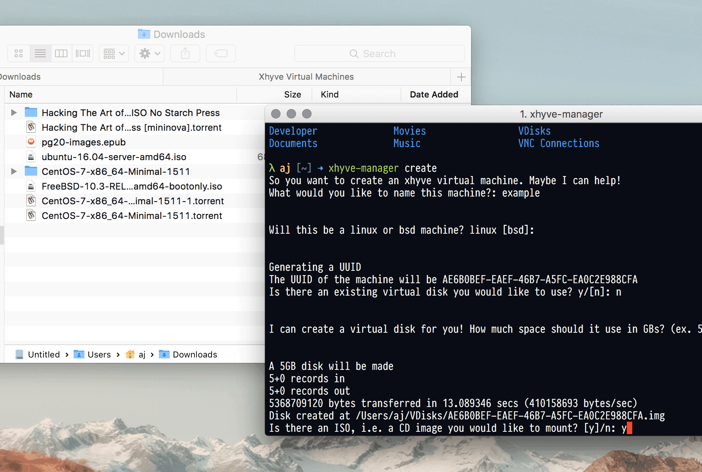

Installing FreeBSD 10.3
Download the FreeBSD 10.3 bootonly ISO.
Create a new machine:
xhyve-manager create
This will start a series of prompts where you can create a virtual disk and specify its size in GB, specify the name, etc.
Specify a CD to mount:

Then you can start the machine:
sudo xhyve-manager start [machine-name]
Once you've finished, edit the machine configuration to point initrd to the virtual disk to boot into the new FreeBSD virtual machine!
[boot]
kernel = /usr/local/share/xhyve-manager/userboot.so
initrd = /Users/aj/VDisks/F00E5442-5F2F-4FCF-AF95-40BAB28BFEAD.img
options =